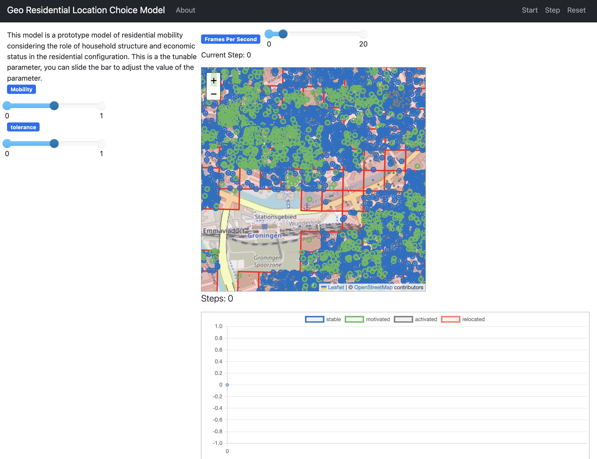
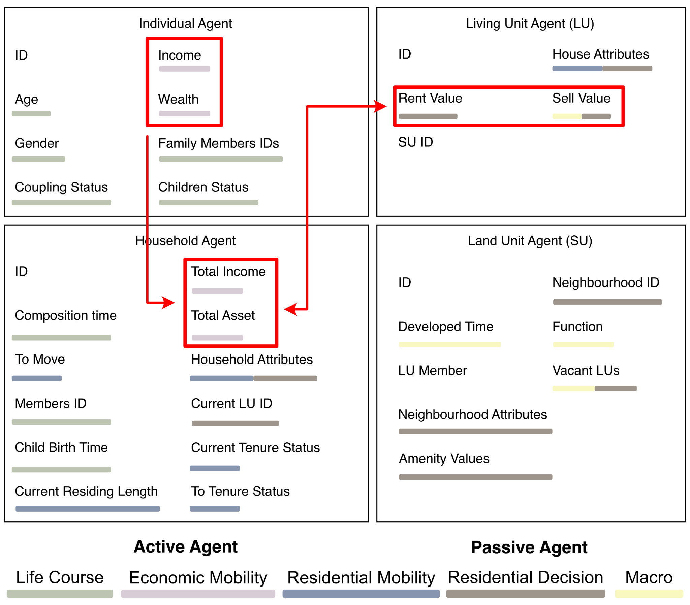

layout: true <div class="my-footer"> <img src="../imgs/TUBK_Logo_ URBA.svg" alt> </div> --- class: top, center <!-- background-image: url(/imgs/background.gif) --> <!-- Slide 01: Title Page --> Go and No Go: <br> # **A**gent-**B**ased **M**odelling # of **U**rban **E**conomic **S**egregation # In the Netherlands <br> Bayi Li Date: February 2024 <br> PhD Promotors: Prof. Dr. Maarten van Ham, Prof. Dr. Tatiana Filatova Co-promotor: Dr. Clémentine Cottineau ??? Good morning, thanks for coming to my go and no go presentation here and online. My PhD project topic is agent-based modelling of urban economic segregation. So today I will present my current progress and the plan for the next three years. --- <!-- Slide 02: Define the targeted social phenomenon --> ## What is Urban Economic Segregation? The uneven distribution of groups with **different economic status** across **residential neighbourhoods** of a city or an urban region (adapted from Van Ham et al. (2021)). <div class="probar-footer"> <div class="bar-light-grey"> <div class="bar-grey" style="width:3%"></div> </div> </div> ??? To study urban economic segregation, we fist need to define the term first. In this project, we see urban economic segregation as the uneven distribution of groups with different economic status across neighbourhoods of urban area. -- ## Complexity of Urban Economic Segregation A complex interplay of family, housing, financial and market factors, influenced by local circumstances. Two main facets: - Residential Why do people choose to live where they live? - Economic What drove the people's economic status change over time, and then influence the housing decision? ??? As a high-level social phenomenon, economic segregation, regarding the complex theory, can be described by interconnected networks of households, being effected by a complex interplay of family, housing, financial and market factors, influenced by local circumstances. But there are basically two main facets which are directly linked to it: residential and economic. So two related fundamental questions are: 1. Why do people choose to live where they live? 2. How the their economic status change over time, and then influence the housing decision? --- <!-- Slide 03: Introduce of agent-based approach --> .right[.image-90[].image-70[]] ## Generative Method > Epstein (2006): If you didn't grow it, you didn't explain it's emergence. A computational simulation that emerges the pattern of economic segregation based on the designated mechanisms and their interplay. ## Agent-Based Modelling It generates the urban economic segregation through **autonomous residential and economic decisions, and local interactions of heterogeneous agents**. ## Causal Mechanisms A method to address complex social phenomena by searching for **causal mechanisms** that exhibit generative power of target social phenomena (Epstein 2006, Hedström 2005). <div class="probar-footer"> <div class="bar-light-grey"> <div class="bar-grey" style="width:10%"></div> </div> </div> ??? In our project, we adopted the generative method, which is grounded on the moto that if you didn't grow it, you didn't explain its emergence. In this sense, the target is to grow the pattern of urban economic segregation in a computational simulation from a designated framework. Specifically, we are using agent-based modelling to describe complex behaviours as a generative process from bottom up to the collective segregation pattern. It is an approach of generative modelling where **heterogeneous entities** make autonomous decisions of residential and economic choice, based on their evolution and interaction with other entities. In social ABMs, causal mechanism is at the core of explanation. The way is through searching for causal mechanism that exhibit generative power of urban economic segregation. > ABMs allow us to capture aspects of systems, such as emergent properties generated from the interaction, that conventional modelling does not permit. --- <!-- Slide 04: The overview of the ABM's theoretical framework --> # Overview ## Overarching Research Question **How can agent-based modelling help us understand the crucial mechanisms which drove urban economic segregation happened in the Netherlands?** <br> <div class="probar-footer"> <div class="bar-light-grey"> <div class="bar-grey" style="width:15%"></div> </div> </div> ??? Therefore, the overall research question to ask in the project, is how can agent-based modelling help us understand the crucial mechanisms which drove urban economic segregation happened in the Netherlands? -- ## Overall Research Aim **Build an agent-based model, involving the main mechanisms of urban economic segregation and their interplays, to simulate the evolution of residential pattern in the Dutch cities.** ??? Hence, the aim is to build an agent-based model, involving the main mechanisms of urban economic segregation and their interplays, to simulate the evolution of residential pattern in the Dutch cities. --- <!-- Slide 05: Sub aims and outcomes (1) --> ## Sub aims and outcomes <!-- ## Sub aims and outcomes -->  **Aim 1**: Investigate the current knowledge basis of constructing an agent-based model of segregation and their theoretical basis **Paper 1**: Review of mechanisms and process design in agent-based models of urban economic segregation <div class="probar-footer"> <div class="bar-light-grey"> <div class="bar-grey" style="width:20%"></div> </div> </div> ??? To further disaggregate the project, four sub amis was further divided to address different aspects. The first one is to investigate the current knowledge basis of constructing an ABM of segregation and their theoretical basis. It corresponds to the paper 1, which is a integrated review of theoretical studies and agent-based models of segregation. --- <!-- Slide 05: Sub aims and outcomes (2) --> ## Sub aims and outcomes <!-- ## Sub aims and outcomes -->  **Aim 2**: Develop a single city ABM to explain the segregation landscape in the case study **Paper 2**: Simulating the evolution of urban economic segregation pattern using agent-based modelling: case study of Groningen, the Netherlands <div class="probar-footer"> <div class="bar-light-grey"> <div class="bar-grey" style="width:20%"></div> </div> </div> ??? In the second one, we will select one city as an example to build our single-city model to deliver a local test of the model in city of Groningen. --- <!-- Slide 05: Sub aims and outcomes (3) --> ## Sub aims and outcomes <!-- ## Sub aims and outcomes -->  **Aim 3**: Develop a national scale ABM to explain the segregation pattern at multi-level scale in the Netherlands during 2011-2023 **Paper 3**: A national scale simulation on urban economic segregation in the Netherlands <div class="probar-footer"> <div class="bar-light-grey"> <div class="bar-grey" style="width:20%"></div> </div> </div> ??? Then, we will upscale the model to national scale, at this phase, we will conduct a national scale simulation in the cities of the Netherlands. --- <!-- Slide 05: Sub aims and outcomes (4) --> ## Sub aims and outcomes <!-- ## Sub aims and outcomes -->  **Aim 4**: Explore the potential of scenario modelling in the policy optimisation to tackle urban economic segregation in the Netherlands **Paper 4**: Scenario agent-based simulations of mitigating strategies on urban economic segregation in the Netherlands <div class="probar-footer"> <div class="bar-light-grey"> <div class="bar-grey" style="width:20%"></div> </div> </div> ??? The last one will be extending the validated national scale baseline model to a multi policy scenario simulations. Therefore, we aims to explore the potential of scenario modelling in the policy optimisation to mitigate urban economic segregation in the Netherlands. --- ### The current progress and future time management .image-85[] <div class="probar-footer"> <div class="bar-light-grey"> <div class="bar-grey" style="width:20%"></div> </div> </div> ??? We have completed the draft of literature review, which is the first paper. And have started the modelling building of single-city model. We aim to finish the model building of the prototype model of Groningen by this year. --- ## Review of ABM of UES (N=62) ### Generative Mechanism and Empirically Grounded ABMs .image-60[] Large scale empirically grounded agent-based models are not sufficiently address the issue of segregation, let alone in the context of the Netherlands. <div class="probar-footer"> <div class="bar-light-grey"> <div class="bar-grey" style="width:25%"></div> </div> </div> ??? First, let's go back to the paper one to see the previous ABMs of segregation. We can see the scattered case studies does not provide sufficient explanation on the Netherlands context. There are a large portion of abstract ABMs without considering the context. And there are rarely a national-scale ABM in segregation. --- ## Review of ABM of UES ### Mechanisms and processes .image-70[] <div class="probar-footer"> <div class="bar-light-grey"> <div class="bar-grey" style="width:25%"></div> </div> </div> ??? When we look inside of those models. We basically can categorise the mechanisms into five components. Residential mobility, residential decision, economic mobility, life course and macro component. They invoke different kinds of interaction between the entities in the system and regulate their behaviours. --- ## Review of ABM of UES ### Mechanisms and processes .image-70[] Mainly effects the interactions between agent (household) and environment (space, neighbourhood characteristics). <div class="probar-footer"> <div class="bar-light-grey"> <div class="bar-grey" style="width:25%"></div> </div> </div> ??? Let's take the housing decision as an example. From early Schelling's model which basically use racial discrimination as a single mechanism that determine the housing decision. Generally, it can be called as homophily, means similar individuals will move toward each other. The attributes of preference are selected based on context. Such as the religious consideration in the Jakarta's case. And also, the neighbourhood effects was increasingly studied with advance of environment synthetics and more dynamic social interactions, such as the O'Sullivan's model. There are also more cross-discipline application of mechanism. For example, the sorting based on supply and demand of housing, or the introduction of household life course. --- ## Review of ABM of UES ### The potential contributions of our project - We will link the mechanism from different components to **better capture the interplay**. - We will build an **empirically grounded ABM** with more reliable parameter set and populating such models with realistic agent behaviours. - We will build **a national scale ABMs** to address the causal mechanisms of urban economic segregation at **multi-scale** of the Netherlands. - We will explore **the scientific and engineering methodology** for calibrating and validating such model. <div class="probar-footer"> <div class="bar-light-grey"> <div class="bar-grey" style="width:25%"></div> </div> </div> ??? In addition, the project can contribute to the field: - Single mechanism still dominant the literature, which means, the interplay between mechanisms were largely overlooked. We will link the mechanism from different components to **better capture the interplay**. - There are huge amount of abstract ABMs. Among them, overly reliance on assumptions with hypothetical parameter set without empirical support. We will build an **empirically grounded ABM** with more reliable parameter set and populating such models with realistic agent behaviours. - As we said, there is rarely large ABM, thus, the segregation was not sufficiently discussed at multiple scale. We will build **a national scale ABMs** to address the causal mechanisms of urban economic segregation at **multi-scale** of the Netherlands. - Calibration, validation and robustness analysis were not well conducted, even in empirically grounded ABMs. We will explore **the scientific and engineering methodology** for calibrating and validating such model. --- ## Model Building Processes - powered by microdata .right_half[ .image-75[] ] <br> The rich information (i.e., housing, demographical and socioeconomic attributes of residents) in the microdata will provide an unprecedented opportunity to ground the model empirically. <div class="probar-footer"> <div class="bar-light-grey"> <div class="bar-grey" style="width:25%"></div> </div> </div> ??? In this project, the microdata will be used to power the model and integrated with initialisation of environment and entities, also inspire the decision rule parameters, and also involved with the model calibration and verification process. The application of such granular data, not usually accessible in other countries. Not only it will fine-graining our model but also provide methodological contribution of how to apply such data in a ABM. --- <!-- Slide 06: The entities of the ABM --> .right[.image-100[]] ## Basic Elements of ABM ### Entities In ABM, there are typically two layers of entities: the actor layer and the environment layer: - Actors In the model, the entity is individual which forms the unit of housing decision, **household** <div class="probar-footer"> <div class="bar-light-grey"> <div class="bar-grey" style="width:25%"></div> </div> </div> ??? --- <!-- Slide 06: The entities of the ABM --> .right[.image-100[]] ## Basic Elements of ABM ### Entities In ABM, there are typically two layers of entities: the actor layer and the environment layer: - Actors In the model, the entity is individual which forms the unit of housing decision, **household** - Environment **Land unit** and **living unit** are the the passive agents that constitutes the environment layer. <div class="probar-footer"> <div class="bar-light-grey"> <div class="bar-grey" style="width:25%"></div> </div> </div> --- <!-- About Agent-Based Modelling: Rules and interactions --> ## Main components and their interactions .image-70[] <!-- .caption[.center[Main components and their interactions]] --> - They contain mechanisms that regulate the corresponding activities of agents - The component independently or co effect certain variables in the system <div class="probar-footer"> <div class="bar-light-grey"> <div class="bar-grey" style="width:25%"></div> </div> </div> ??? There are five components corresponding to the observations from literature. Each component in our model contains mechanisms that regulate the corresponding activities of household. The components independently or collective effect certain variables in the system. --- ## Fundamental Modelling Framework .image-50[] <div class="probar-footer"> <div class="bar-light-grey"> <div class="bar-grey" style="width:25%"></div> </div> </div> Start with residential mobility and residential decision, as step-wise housing decisions. ??? I started with building the fundamental modelling framework from residential mobility and residential decision. It involves step-wise housing decisions. The household will decide if they gonna move. If they gonna change their house tenure. Then select the district, neighbourhood and house. Finally, the affordability will be the determinant of whether they gonna get the house or not. Then, we gradually add more mechanisms, for example, the the affordability is largely determined by income. We can then add the economic mobility mechanism to give the income a changing dynamics. Ect. --- ## Incremental Modelling Blocks <!-- .right[] --> .image-50[] A collection of interconnected modules, each responsible for specific processes. The module can be activated and the combination way can be reconstructed. <div class="probar-footer"> <div class="bar-light-grey"> <div class="bar-grey" style="width:25%"></div> </div> </div> ??? There are other optional mechanisms, which we will include them as interconnected modules, each responsible for specific process. It will be programmed as individual blocks, with exchange of variables or entities. So it can be activated or deactivated. Or reconstructed. In this way, we can further determine where this mechanism is necessary on account of the emergence of economic segregation. --- <!-- The life course component --> ## Synthetic Household Population and their life course ### Heterogeneity of Households .right[ .caption[.center[Example of life trajectory, events and impact on household characteristics.]]] - The role of life course component - Described by probability, driven by summarised Statistics - Described by mathematical process (e.g., Markov, Bayesian approach) - Fundamental stages and essential micro life events <div class="probar-footer"> <div class="bar-light-grey"> <div class="bar-grey" style="width:25%"></div> </div> </div> ??? Another important setting is household synthetics. We will capture the heterogeneity of household and the dynamic change of it by introduce the life course theory. It may be described by aggregated probability or certain mathematical process. Only fundamental stages and micro life events that is essential to other components will be captured. --- ## Target Simulated Outputs: Segregation pattern from 2011-2023 - Rank-Order Information Theory Index (ROITI)<sup>a</sup> at scale of city - . .image-30[] .caption[.center[Example of ROITI index check, adapted from Bischoff & Owens (2019).]] .note[*Notes: <sup>a</sup>: a measure on ranks of economic attributes and more sensitive to the residential concentration of poverty or affluence*] <div class="probar-footer"> <div class="bar-light-grey"> <div class="bar-grey" style="width:85%"></div> </div> </div> ??? Finally, we will discuss how we measure the segregation, and what is the desired outcome: First one is the segregation index at city level. We adopted the Ranked-Order Information Theory Index because it is more sensitive to residential concentration of poverty and affluence. We will compare the value and the order of cities it with observations to determine if the overall segregation value and cross-city difference is well captured. --- ## Target Simulated Outputs: Segregation pattern from 2011-2023 - Rank-Order Information Theory Index (ROITI)<sup>a</sup> at scale of city - Concentration (global Moran's I) at scale of city .image-30[] .caption[.center[Example of global Moran's Index measurement, adapted from Panda et. al. (2020).]] <div class="probar-footer"> <div class="bar-light-grey"> <div class="bar-grey" style="width:85%"></div> </div> </div> ??? Then we will calculate the aggregated indicator of spatial concentration at the city level. This is to ensure the overall concentration tendency is well simulated. --- ## Target Simulated Outputs: Segregation pattern from 2011-2023 - Rank-Order Information Theory Index (ROITI)<sup>a</sup> at scale of city - Concentration (global Moran's I) at scale of city - Clustering (local Moran's I) at scale of neighbourhoods .image-30[] .caption[.center[Example of local Moran's Index measurement, adapted from Panda et. al. (2020).]] <div class="probar-footer"> <div class="bar-light-grey"> <div class="bar-grey" style="width:85%"></div> </div> </div> ??? Also the local clustering of neighbourhoods of major income classes at neighbourhood level. This is to ensure the local spatial distribution of rich or poor neighbourhood is well simulated. --- ## Target Simulated Outputs: Segregation pattern from 2011-2023 - Rank-Order Information Theory Index (ROITI)<sup>a</sup> at scale of city - Clustering (local Moran's I) at scale of neighbourhoods - Concentration (global Moran's I) at scale of city - A special focus on the residential pattern of individual groups of affluent and poverty .image-40[] .caption[.center[Example of economic segregation concentrates of poverty and affluence<br>adapted from Reardon & Bischoff (2014).]] <div class="probar-footer"> <div class="bar-light-grey"> <div class="bar-grey" style="width:85%"></div> </div> </div> ??? Finally, we will put a special focus on the residential pattern on the affluent and poverty household groups. By identify their location and possibly tracing back their simulated housing trajectory, it can provide more insights on strategies on targeted groups. --- <!-- Prototype Model design --> ## Paper 02 ### Prototype Model design on Case Model of Groningen .image-40[] .caption[.center[Figure. The case of Groningen and its population density.]] The [Functional Urban Areas (FUA)<sup>a</sup>](https://www.oecd.org/cfe/regionaldevelopment/functional-urban-areas.htm) of Groningen. It is a standalone city comparatively in the Netherlands, with a moderate size to operate. Population of FUA of Groningen is <u>474, 000</u> (2011), aggregated to around <u>200, 000</u> households. .note[*Notes: <sup>a</sup>: each of FUA consists of a densely inhabited city and of a surrounding area (commuting zone)*] <div class="probar-footer"> <div class="bar-light-grey"> <div class="bar-grey" style="width:90%"></div> </div> </div> --- <!-- Prototype Model design --> ## Paper 02 ### Glimpse of Modelling Interface and Entities <div class="row"> <div class="column">  Built with Python (Mesa) </div> <div class="column"> <img src="../imgs/design/entity-des/entities_overview.jpg" alt="Forest" style="width:100%"> </div> </div> <div class="probar-footer"> <div class="bar-light-grey"> <div class="bar-grey" style="width:95%"></div> </div> </div> ??? The left picture is the snapshot of the model interface. It is a browser-based ABM, the left panel is the user tunable parameters. The main window contains the land unit, living unit and household. The bottom is the monitor of agent's number by characteristics. --- <!-- Prototype Model design --> ## Paper 02 ### Glimpse of Modelling Interface and Entities <div class="row"> <div class="column"> </div> <div class="column">  </div> </div> <div class="probar-footer"> <div class="bar-light-grey"> <div class="bar-grey" style="width:95%"></div> </div> </div> ??? The right side displays the attributes attached to the modelled entities. They are designed to fit the needs by different components. For example, the sum of individuals is the household income and wealth. And they are engaged with the value of living unit by the affordability sorting, which related to residential decision component. --- # Open Access .right[ .caption[.center[Today's slides]]] - A simplified version of the model will be hosted online for public engagement. - All codes will be open access alongside with the publications to support scientific reproducibility. - The ongoing project progress will be updated regularly on SEGUE website: <u>www.erc-segue.nl</u> - The ABM progress will be updated on my personal website: <u>www.spatialuminous.top/open-review</u> <div class="probar-footer"> <div class="bar-light-grey"> <div class="bar-grey" style="width:100%"></div> </div> </div> ??? 20s We follows the open science principles: - Firstly, a simplified version of the model will be hosted online for public engagement. - All codes will be open access alongside with the publications to support scientific reproducibility. - The ongoing project progress will be updated regularly on our project website. - The ABM progress will be updated on my personal website, and synced to the project website regularly. --- .middle[Questions?] ??? 25 min time --- <br> .middle[Contact Email: B.Li-5@tudelft.nl] --- **Appendix 01: what are our contributions of doing such ABM-UES?** Axelrod and Tesfatsion (2005) points out four goals of ABM: 1. Empirical understanding: seek causal explanations This corresponds to the overall project aim of understanding the crucial mechanisms of economic segregation in the Netherlands. 2. Normative understanding: as laboratories for the discovery of good designs (e.g., policies) This corresponds to our paper 4. 3. Heuristic: this refers to the counterfactual outcomes could be generated from fundamental causal mechanism. Mostly for abstract ABM, not our goal 4. Methodological advancement: To provide the researchers with rigorous tools to conduct controlled computational experiments. This corresponds to our methodological principles such as large scale and modular ABM. --- **Appendix 02: the challenge of large model** > More is Different - The model contains extensive number of agents with a variety of heterogeneity. - The multi mechanisms adopted Modular approach makes it possible to introduce new mechanisms and reduce the non-significant mechanisms. --- **Appendix 03: the potential changing optimal structure over time** We are not considering the change of decision making framework over time. It can explain there were rarely abrupt changes . ??? In our project, the mechanism at certain context was considered as stable over time. Of course, it is because we select the endogenous mechanisms on purpose and deliberately omit unexpected events, etc. For example, three years of pandemics significantly change people's worklocation and threfore, xxxx. We have the temporal variation in mind, and will examine it if any irregularity was observed from the empirical data or simulated outcomes. --- **Appendix 04: the extensive computational cost** 1. We have allocate the resources to computing task on a HPC 2. Given that the aim of the project is to understand urban economic segregation, we will not consider mathematical approaches to reduce the complexity, in paper 2 and 3, for example, machine learning or dimension reduction. However, if time permits, we can explore the mathematically grounded simplification of ABM to balance the potential high computational power increase brought by varying multiple parameter set.